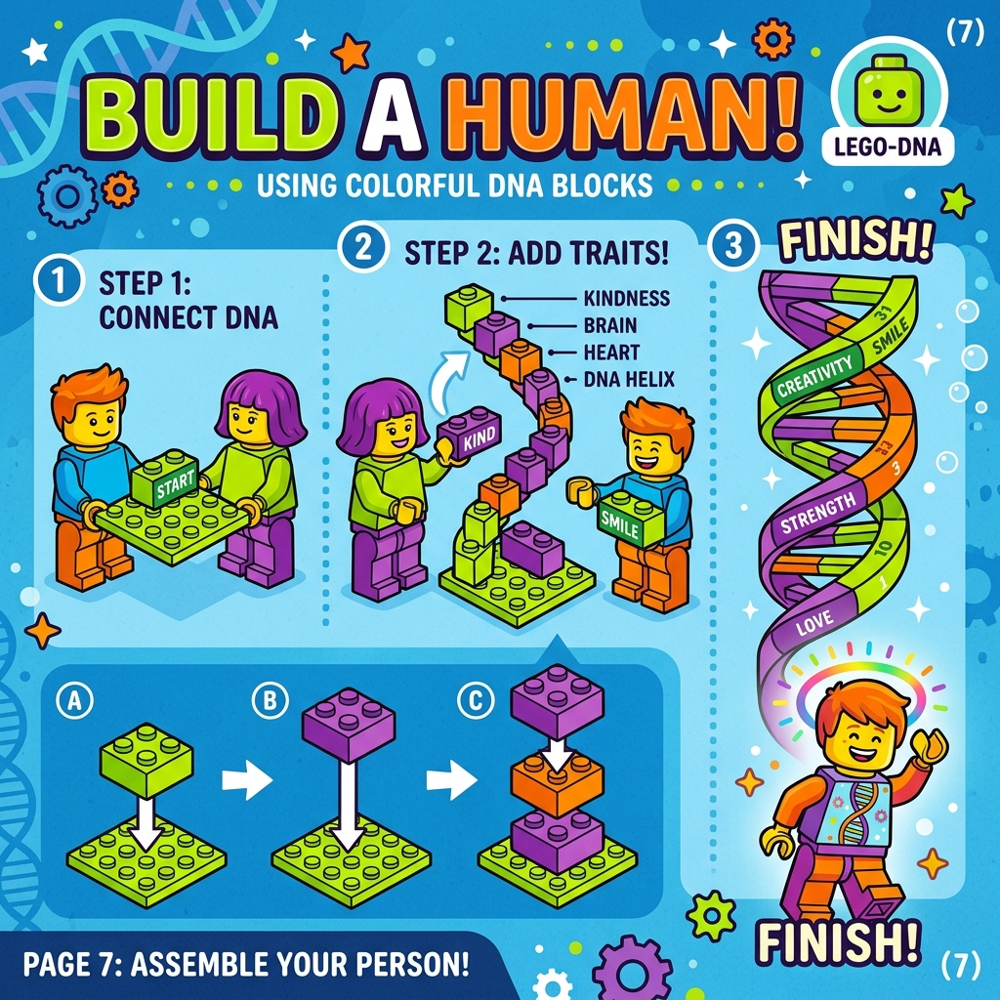
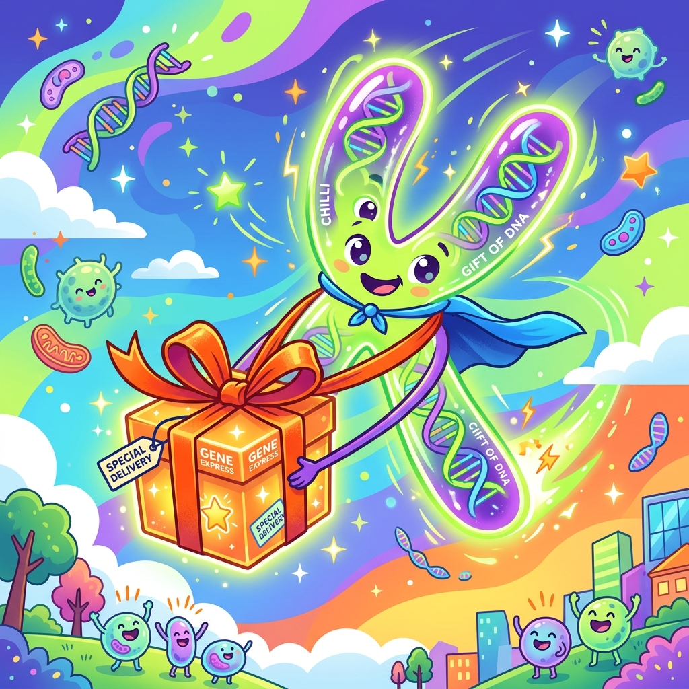
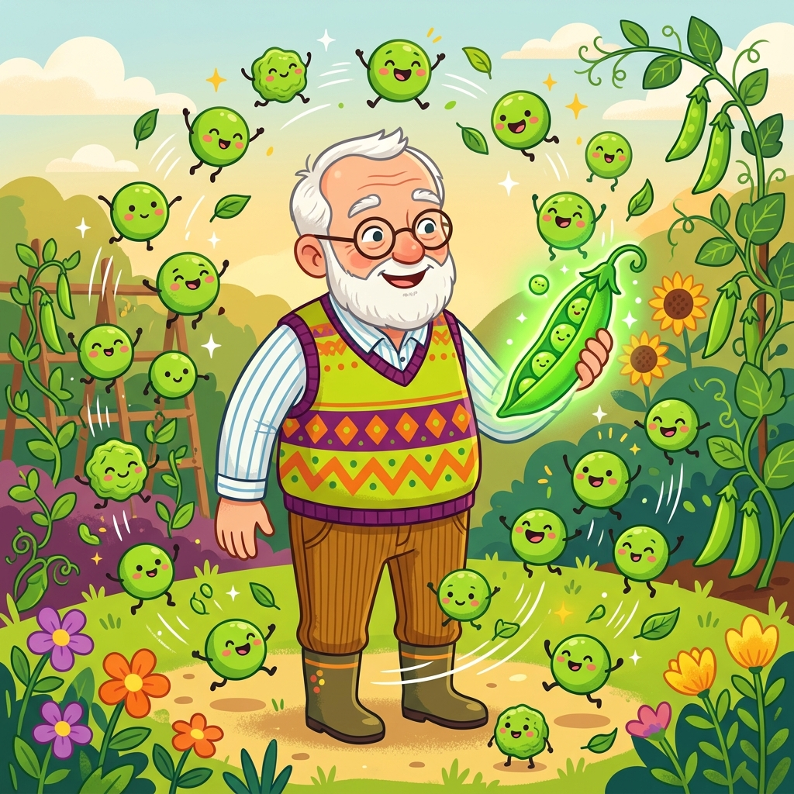
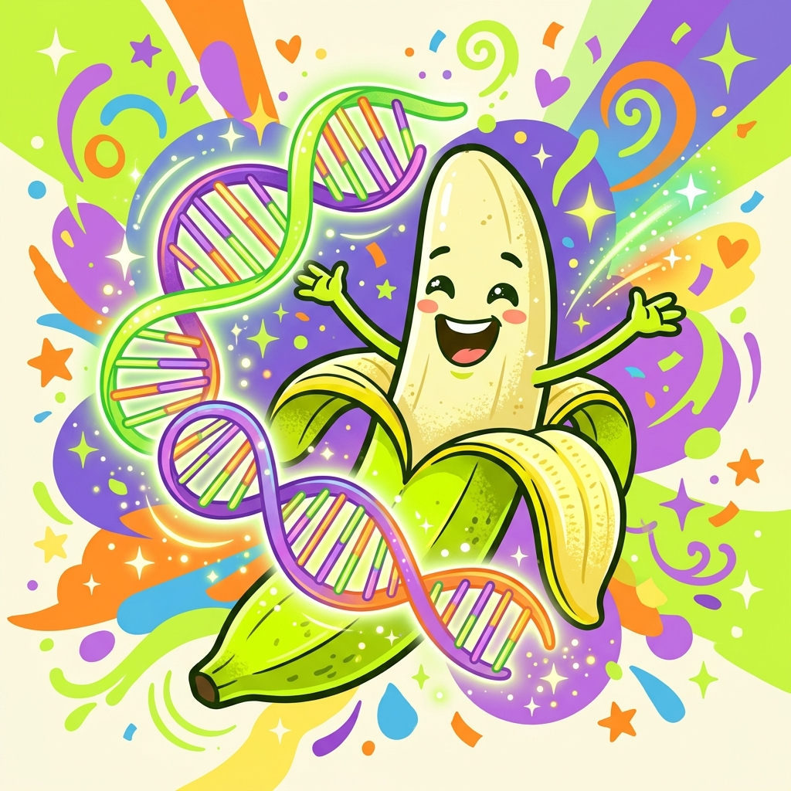

你的专属科学向导

想象一下，你是一台 无敌超级机器！
DNA 就是拼装你的 乐高说明书 🧱
它包含了让你成为“你”的所有秘密指令！
如果 DNA 是一本厚厚的大书...
那么 基因（Gene） 就是书里的一篇篇 小厨谱 🍳

我们的 DNA 特别特别长！如果全拉直，能有两米多长！😱
为了塞进小小的细胞里，它们会被紧紧打包成“X”形状的
超能快递包裹 📦
这就是 染色体（Chromosome）！
快递箱
超大说明书
一页小厨谱
它们齐心协力，打造了独一无二的你！

这位是格雷戈尔·孟德尔（Gregor Mendel），
我们称他为 “遗传学之父”！
他没用什么高科技仪器，就靠在花园里 种豌豆 🌱 发现了遗传的秘密！
孟德尔把 纯种黄豌豆 和 纯种绿豌豆 结亲家...猜猜宝宝什么颜色？
那么绿色的基因消失了吗？并没有！
它们只是 “藏” 起来了！
只要它在，就必须听它的！
(比如豌豆的黄色 Y)
只有大BOSS不在时，它才敢冒泡！
(比如豌豆的绿色 y)
科学家们有一个神奇的“占卜板”，
只要画一个方格，就能算出宝宝长什么样的概率！
| Y (爸爸的大BOSS) | y (爸爸的安静基因) | |
| Y (妈妈的大BOSS) |
YY 💛 (黄色) |
Yy 💛 (黄色) |
| y (妈妈的安静基因) |
Yy 💛 (黄色) |
yy 💚 (绿色) |
看上面的魔法阵！如果爸爸是 Yy，妈妈也是 Yy...
他们的宝宝有 25% 的概率是绿色的！🌱
没想到吧？两个黄豌豆能生出绿豌豆！
这就是安静基因的完美逆袭！😎

你知道吗？如果你提取出你的DNA，再提取出香蕉的DNA...
你会发现，我们和香蕉有大约 50% 相同的DNA！🍌
（所以，我们一半是香蕉吗？哈哈，并不是哦！因为生命的基础材料都很像！）